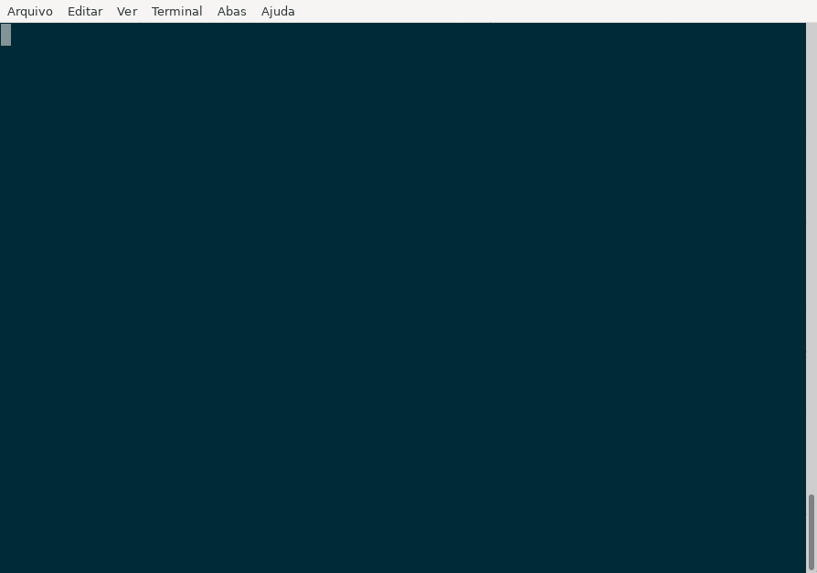
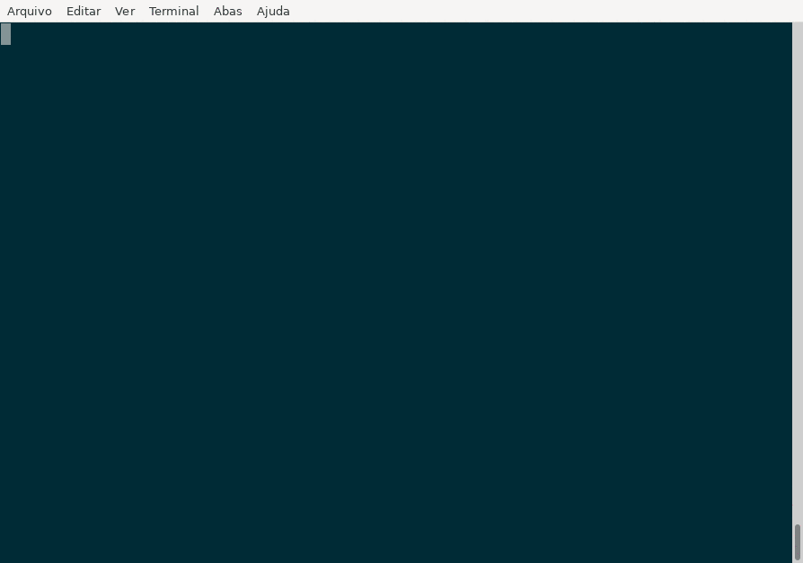
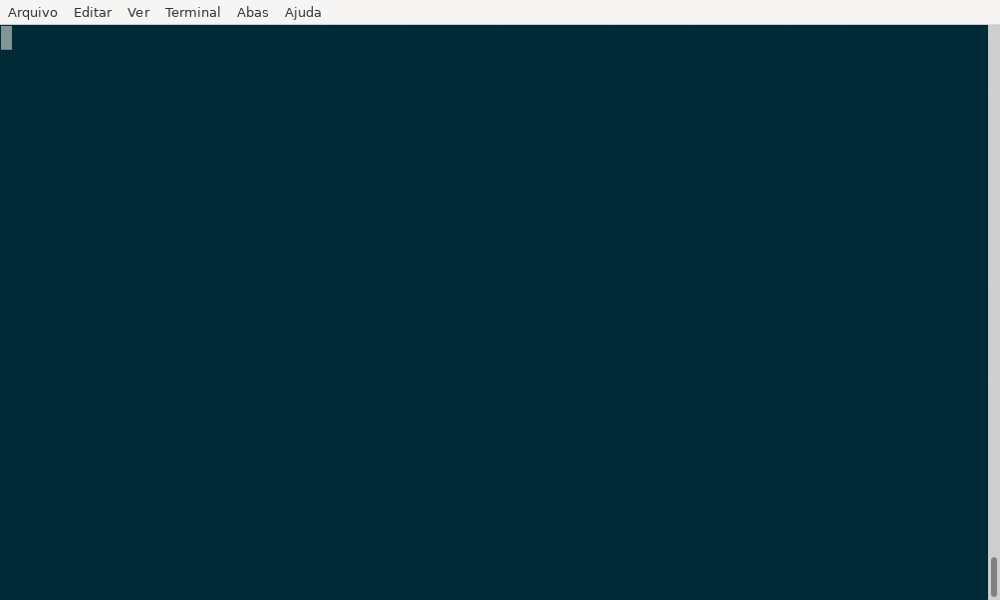
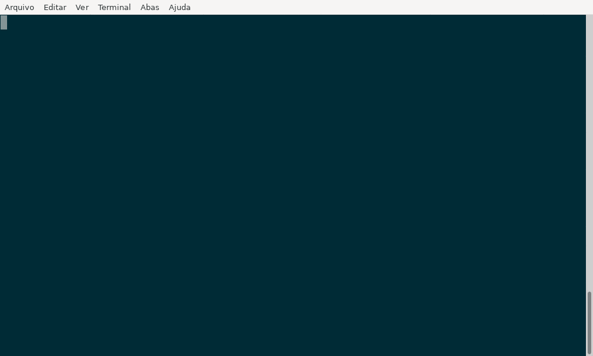

Tutorial mkdocs local
Introdução
O objetivo deste tutorial é a execução do microCI localmente para criar
documentação.
A ferramenta mkdocs-material
oferece uma maneira prática para documentar o projeto usando arquivos no
formato markdown. Neste tutorial veremos como criar um projeto mkdocs e gerar
uma documentação usando o microCI.
Configuração do microCI
O microCI cria um arquivo de configuração inicial para executar o mkdocs-material:

Um arquivo chamado .microCI.yml foi criado no diretório atual:
---
steps:
# Remova este passo após a primeira execução
- name: "Criar arquivos iniciais do mkdocs"
plugin:
name: "mkdocs_material"
action: "new ."
- name: "Construir documentação em formato HTML"
description: "Documentação do projeto"
plugin:
name: "mkdocs_material"
action: "build"
# Contruindo para uma pasta personalizada
# action: "build --site-dir public
- name: "Servidor local na porta 8000 (Ctrl+C para finalizar)"
description: "Executa servidor local para preview da documentação"
# passo executado localmente
only: "local-step"
plugin:
name: "mkdocs_material"
action: "serve"
# Porta personalizada, caso já esteja utilizando a padrão 8000
# port: 9001
Cada chave name inicia um novo passo. No arquivo criado existem 3 passos:
Criar arquivos iniciais do mkdocsConstruir documentação em formato HTMLServidor local na porta 8000
Passos com a chave only não são executados por padrão.
Primeira execução
Edite o arquivo .microCI.yml para ajustar a configuração se necessário
e execute:
Se a geração foi bem sucedida o nome dos passos seguidos de OK são exibidos
no terminal:
Criar arquivos iniciais do mkdocs...............: OK
Construir documentação em formato HTML..........: OK

Remova o primeiro passo (Criar arquivos iniciais do mkdocs) e execute o comando novamente:

Passos adicionais
A configuração contem um passo que pode ser executado sozinho para subir um servidor para previsualizar a documentação.
